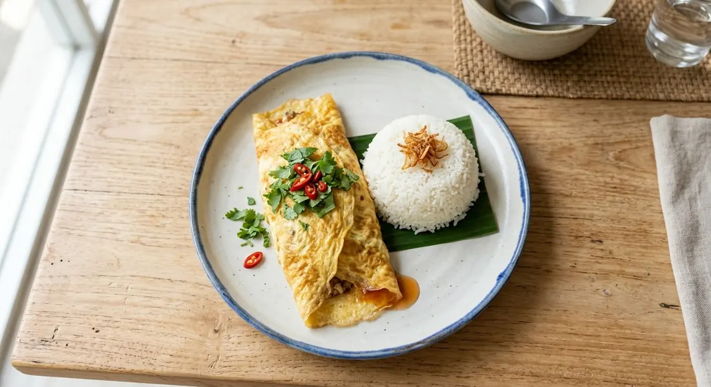

Minced pork in a sweet-savoury ketchup glaze, wrapped inside a thin golden sheet of egg — the envelope with a secret inside.

ไข่ยัดไส้ is the dish every Thai kid grew up with — a rice-plate staple that turns "what's left in the fridge" into the best lunch of the week. The name says the whole construction: ไข่ (egg) ยัด (stuffed) ไส้ (with a filling). A thin egg sheet, a savoury-sweet minced pork filling, folded shut like an envelope.
The filling is the flavour, and the flavour is the ketchup glaze. Phol's chef recipe fries pork with pounded garlic, seasons with oyster sauce, white soy, sugar and ketchup, then finishes on high heat with onion and tomato — with one detail that separates the careful version from the soggy one: the tomato seeds are scooped out first, so the filling reduces into a glaze instead of a puddle. The egg wrap goes around it while both are still warm, so the egg clings.
And because it's a leftovers dish by nature, the sources happily swap the pieces. Maggi's version adds white prawns to the pork. Pim's confession is the most honest account of the dish: her usual version takes ketchup, her no-ketchup version doesn't, and one day, with no ketchup in the fridge, she built the whole thing on Jazzii orange sauce instead — sweet-sour with a citrus edge — and documented it as a keeper. That's khai yat sai in one story: the recipe adapts, the envelope doesn't.
| Thai | English | Amount |
|---|---|---|
| ไส้ (the filling) | ||
| หมูบด | Minced pork | 150 g |
| กระเทียมโขลก | Garlic, pounded | 1 tbsp |
| แครอทหั่นเต๋า | Carrot, diced | 30 g |
| หอมใหญ่ / มะเขือเทศ | Onion / tomato, diced | 60 g / 2 |
| ต้นหอมซอย | Spring onion | 1 |
| ซอสหอยนางรม / ซีอิ๊วขาว | Oyster sauce / white soy | 2 tbsp / 2 tsp |
| ซอสมะเขือเทศ / น้ำตาลทราย | Ketchup / sugar | 1 tbsp / 2 tsp |
| ไข่ (the wrap) | ||
| ไข่ไก่ | Eggs | 3 |
| น้ำมันรำข้าว | Rice bran oil | 2 + 2 tbsp |
Maggi's pork-and-prawn version: 100 g pork, 5 white prawns, seasoning sauce, oyster, ketchup, sugar, frozen mixed veg, 2 eggs. Pim's orange-sauce version: the same dish with Jazzii orange sauce in place of ketchup — her documented fridge improvisation.
The sauce. Ketchup is the standard (Phol, Maggi), but Pim's no-ketchup school exists, and her orange-sauce version is the documented third way. The ketchup glaze is the classic school-lunch flavour; the orange sauce is sweeter and sharper.
One protein or two. Pork alone (Phol, Pim) or pork with white prawns (Maggi). The prawn version is the special-occasion upgrade.
The vegetables. Fresh carrot, onion and tomato (Phol) or frozen mixed vegetables (Maggi's shortcut). Pim's approach is the dish's true north: whatever vegetables are left in the fridge.
Egg count. Two (Maggi) to four (Pim's bigger version) — three being the standard for one envelope. More eggs, thicker sheet; fewer, lighter.
Seeds or no seeds. Phol scoops the tomato seeds; the quicker recipes don't bother. It's the difference between a glaze that clings to the rice and a filling that waters it.
This recipe is translated from the following Thai-language sources. Where they disagree, we've said so.
1. Phol Food Mafia — "Stuffed Omelette (ไข่ยัดไส้)" by Chef Thanakorn Phloisichomphu (the recipe used here) — pholfoodmafia.com
2. Maggi (Thailand) — "ไข่ยัดไส้" (pork-and-prawn version) — maggi.co.th
3. Pim's Kitchen (พิม) — "ไข่ยัดไส้หมูสับซอสส้ม" (the orange-sauce improvisation) — pim.in.th